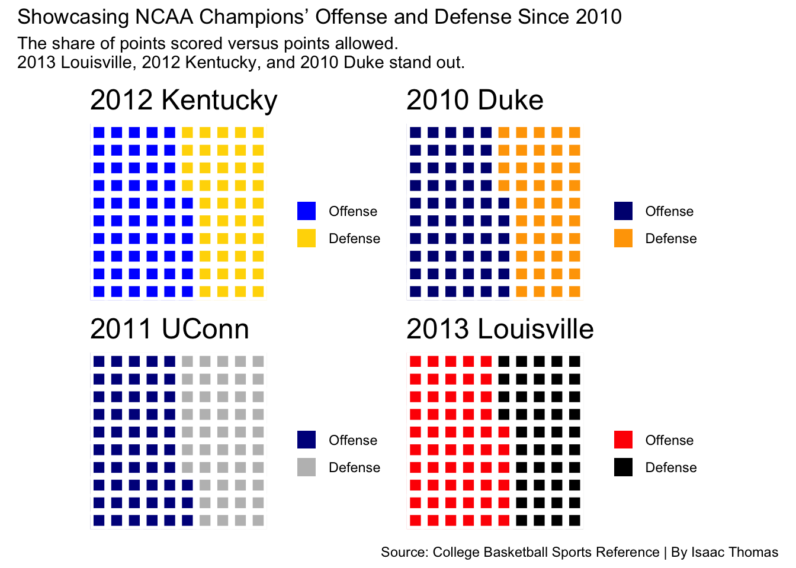

Is 2012 Kentucky the best national champions in college basketball since 2010?
sports
NCAA
basketball
Author
Isaac Thomas
Published
December 6, 2025
The 2012 Kentucky Wildcats had a remarkable offensive season, finishing 7th in total points scored with 3,095 among all NCAA champions since 2010. What really set them apart, however, was their ability to get to the line. They led the group in free throw attempts with 938, showcasing their aggressive style of play and efficiency in drawing fouls. This combination of high scoring and prolific free throw attempts highlights Kentucky’s dominance on the court that year and underscores why they secured the championship.
This table shows how each championship team performed offensively and highlights 2012 Kentucky’s dominance
Season
TeamName
FG
FGA
2P
2PA
3P
3PA
FT
FTA
PTS
2018
Villanova
1220
2440
756
1282
464
1158
559
718
3463
2025
Florida
1182
2510
792
1413
390
1097
637
875
3391
2017
North Carolina
1226
2633
943
1835
283
798
642
916
3377
2024
UConn
1177
2367
837
1416
340
951
562
756
3256
2022
Kansas
1144
2393
858
1600
286
793
555
774
3129
2016
Villanova
1086
2247
739
1288
347
959
599
766
3118
2012
Kentucky
1096
2248
871
1653
225
595
678
938
3095
2015
Duke
1099
2191
816
1459
283
732
610
873
3091
2010
Duke
1049
2375
748
1593
301
782
682
899
3079
2023
UConn
1082
2333
729
1360
353
973
547
719
3064
2013
Louisville
1048
2300
818
1609
230
691
652
920
2978
2011
UConn
1053
2429
819
1718
234
711
627
822
2967
2014
UConn
971
2163
684
1422
287
741
644
829
2873
2019
Virginia
974
2056
653
1243
321
813
445
598
2714
2021
Baylor
917
1886
618
1162
299
724
354
500
2487
Source: College Basketball Sports Reference | By Isaac Thomas
This highlights the offensive and defensive performance of NCAA champions from 2010 to 2013. Each chart visualizes the proportion of points a team scored compared to the points they allowed, giving a quick sense of their dominance on the court. The 2012 Kentucky Wildcats stand out for their balanced yet high-powered offense, while 2010 Duke and 2013 Louisville show strong scoring capabilities as well. 2011 UConn demonstrates a more even distribution between points scored and allowed.
library(tidyverse)library(waffle)library(patchwork)get_off_def <-function(df) { pts_col <-names(df)[grepl("^PTS", names(df))] team_val <- df |>filter(...1=="Team") |>pull(all_of(pts_col)) |>as.numeric() opp_val <- df |>filter(...1=="Opponent") |>pull(all_of(pts_col)) |>as.numeric()tibble(Offense = team_val, Defense = opp_val)}make_waffle_vec <-function(df_row, squares =100) { df_row |>mutate(total = Offense + Defense,Offense =round(Offense / total * squares),Defense =round(Defense / total * squares) ) |>select(Offense, Defense) |>as.numeric() |>set_names(c("Offense", "Defense"))}kentucky_vec <-get_off_def(twentytwelveKentuckyone) |>make_waffle_vec()duke_vec <-get_off_def(twentytenDuke) |>make_waffle_vec()uconn_vec <-get_off_def(twentyelevenUconnone) |>make_waffle_vec()louisville_vec <-get_off_def(twentythirteenLouisvilleone) |>make_waffle_vec()kentucky_chart <-waffle(kentucky_vec, rows =10, colors =c("blue", "gold"), title ="2012 Kentucky")duke_chart <-waffle(duke_vec, rows =10, colors =c("navy", "orange"), title ="2010 Duke")uconn_chart <-waffle(uconn_vec, rows =10, colors =c("darkblue", "gray"), title ="2011 UConn")louisville_chart <-waffle(louisville_vec, rows =10, colors =c("red", "black"), title ="2013 Louisville")final_plot <- (kentucky_chart | duke_chart) / (uconn_chart | louisville_chart) +plot_annotation(title ="Showcasing NCAA Champions’ Offense and Defense Since 2010",subtitle ="The share of points scored versus points allowed.\n2013 Louisville, 2012 Kentucky, and 2010 Duke stand out.",caption ="Source: College Basketball Sports Reference | By Isaac Thomas" )print(final_plot)

The 2012 Kentucky Wildcats stand out as the top scoring team among recent NCAA champions, posting a z-score of about 1.08 for points scored, meaning they scored more than one standard deviation above the average of champions from 2010 to 2014. This z-score highlights Kentucky’s offensive dominance in context, showing that their scoring was not just high in raw numbers but exceptional relative to other title-winning teams in this era. By standardizing points through z-scores, we can clearly see how Kentucky’s 2012 performance compares to other champions like 2010 Duke, 2011 UConn, 2013 Louisville, and 2014 UConn offering a more precise perspective on their offensive impact.
library(tidyverse)library(gt)pull_team_row <-function(df) { df |>filter(...1=="Team") |>select(-...1) |>mutate(across(everything(), as.numeric))}champion_files <-list(`2010 Duke`=read_csv("2010Duke2.csv"),`2011 UConn`=read_csv("2011Uconn2.csv"),`2012 Kentucky`=read_csv("2012Kentucky2.csv"),`2013 Louisville`=read_csv("2013Louisville2.csv"),`2014 UConn`=read_csv("2014Uconn2.csv"))champions <-tibble(Team =names(champion_files),Data =map(champion_files, pull_team_row)) |>unnest(Data)champion_z <- champions |>mutate(across(.cols =where(is.numeric),.fns =~as.numeric(scale(.x)),.names ="z_{.col}" ) )champion_ranked <- champion_z |>select(Team, PTS, z_PTS) |>arrange(desc(z_PTS))champion_ranked |>gt() |>tab_header(title ="Scoring Standouts Among NCAA Champions Since 2010",subtitle ="This table shows z-scores for points scored. Higher z-scores indicate teams that scored far above the era average, contextualizing Kentucky 2012 among other champions." ) |>tab_source_note(source_note ="Source: College Basketball Sports Reference | By: Isaac Thomas" ) |>tab_style(style =list(cell_fill(color ="blue"),cell_text(color ="white", weight ="bold") ),locations =cells_body(rows = Team =="2012 Kentucky" ) )
Scoring Standouts Among NCAA Champions Since 2010
This table shows z-scores for points scored. Higher z-scores indicate teams that scored far above the era average, contextualizing Kentucky 2012 among other champions.
Team
PTS
z_PTS
2012 Kentucky
77.4
1.08441625
2010 Duke
77.0
0.92838514
2013 Louisville
74.5
-0.04680933
2011 UConn
72.4
-0.86597269
2014 UConn
71.8
-1.10001937
Source: College Basketball Sports Reference | By: Isaac Thomas
While no single metric tells the full story, the 2012 Kentucky Wildcats clearly leave a strong impression. Across the visualizations of offense versus defense, total points, and z-scored performance, Kentucky consistently ranks near the top, especially in scoring and free throw attempts. Yet, they do not lead every statistical category, showing that even a standout team has areas where others excel. Taken together with the eye test—watching their pace, depth (many future nba players on team including Anthony Davis and Michael Kidd-Gilchrist), and scoring efficiency—the 2012 Wildcats could be considered one of the best national championship teams of the last decade, even if they only dominate in select stats.